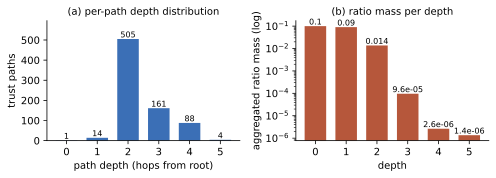
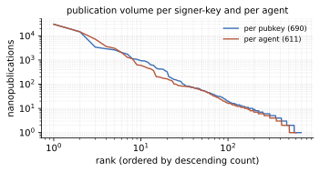
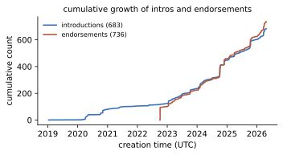
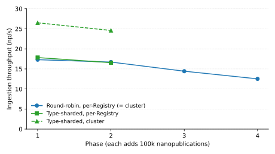
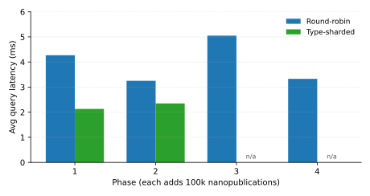
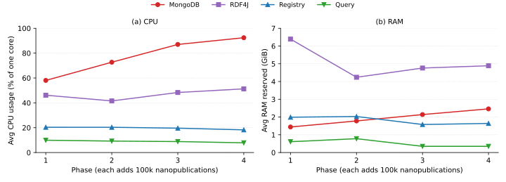

A Decentralized Infrastructure for Trust-Aware Open Knowledge Sharing by Humans and AI Agents [DRAFT]
- Modified
Abstract
Context: one sentence on the broader research area and why it matters. Semantic technologies and models have matured and become very powerful tools to increase the power and accuracy of recent AI approaches. Problem: one sentence on the specific gap, limitation, or open question. However, we currently lack channels where semantically structured knowledge can be reliably published and queried, both by humans as well as AI agents. Objective: one sentence stating what this paper sets out to achieve. Here we show how this gap can be filled by a global ecosystem that aligns with the original Semantic Web vision with respect to openness, decentralization, and formal semantics, but also targets trust and redundancy. Approach: one or two sentences naming the proposed artifact/method and its key idea. Our approach is based on the concept and technology of nanopublications with content-addressed Trusty URIs and a three-layer peer-to-peer network of publishing services, query services, and user applications, respectively. The trust network elements that link user identifiers to public keys and assert trust links are published as nanopublications themselves, and the publishing services build upon them to calculate a global trust network and assign quotas. The querying services build upon that, load the nanopublications into different separate triple stores, sliced by pubkey keys as well as nanopublication types. User applications then don't need to store data locally but can access these services to serve as a universal knowledge sharing UI. Evaluation: one sentence on how the approach was validated (datasets, experiments, deployment). Double-check abstract evaluation/results phrasing against the final experiments before submission. We evaluate the ecosystem on a multi-node test deployment running a synthetic publish/query workload under two coverage configurations, complemented by a descriptive analysis of the live deployed trust network. The live network exhibits the bounded-depth and ratio-conservation behaviour predicted by IDEBT, per-Registry ingestion is preserved under type-sharded coverage so that cluster throughput grows with the number of Registries covering each type, and query latency stays in the millisecond range as the corpus scales from 100k to 400k nanopublications. Implications: one sentence on broader impact, takeaway, or what this enables next. Our work shows that a such a decentralized network of services based on nanopublications has the capacity and potential to serve as a universal and globally integrated knowledge sharing platform.
Keywords
- Nanopublications
- Knowledge Graphs
- FAIR Data
- Scholarly Communication
- Decentralized Infrastructure
Introduction
The Semantic Web was originally envisioned as an extension of the World Wide Web in which information is given well-defined meaning, enabling computers and people to work in cooperation [11]. In this vision, knowledge is openly published in formally structured form, identified by URIs, linked across sources, and processed by autonomous agents that act on behalf of human users. The expected outcome is a global, decentralized information infrastructure that allows for precise global reasoning with shared semantics.
Two and a half decades on, important components of this vision are mature and tested: RDF, OWL, SPARQL, SHACL, and a wide variety of vocabularies. However, large parts of the social and infrastructural pieces remain unrealised. There is no generally accessible method or channel to easily publish semantically structured contributions such that they can be picked up immediately by knowledge consuming users or applications; there is no global trust layer that lets clients decide which sources to trust without delegating that judgement to a central platform; and there is no unified interface to globally query pulished semantic statements. Wikidata [32] probably comes closest, but is restrictive on its content (you cannot publish your own opinions or personal arguments there, for example), is set up as a centralized monolithic system, and does not provide a trust framework that transcends the scope of the system itself. As a consequence, semantically structured knowledge today still circulates mostly as bulk dataset releases from curated silos, and sharing knowledge through these is therefore slow and mostly depends on a few individuals such as the resource maintainers. We do not have a global infrastructure where humans and machines can contribute and build upon each others' contributions in a reliable and fast manner.
The Knowledge Space [10] is a vision of a such a global infrastructure: an open and decentralized global socio-technical ecosystem in which knowledge is shared as small, immutable, uniquely identified, and cryptographically signed records, and in which trust in agents and services is established through transparent algorithms over community assessments. We are here proposing a concrete implementation of that vision, providing the needed record format, signing infrastructure, registries, query services, and trust computation.
The research question we address is therefore: How can a decentralized infrastructure enable open, trust-aware knowledge sharing by humans and autonomous agents alike, achieving scalability and reliability without delegating trust judgement to a central operator? The main contributions of this paper are:
- A federated architecture for decentralized and scalable nanopublication publishing and querying.
- A deterministic and bounded trust algorithm called IDEBT that yields in a decentralized nanopublication-based environment a locally verifiable trust network that other services can build upon.
- Software components implementing the architecture and trust algorithm above, in the form of Nanopub Registry, Nanopub Query, and Nanodash
- A descriptive analysis of the live deployed network applying the architecture, the trust algorithm, and the software components above, demonstrating the network's overall practical functioning.
- TBA — main quantitative result of the multi-node simulation experiment.
Approach
Our approach presented here addresses the gaps of the existing first-generation nanopublication network [6], by proposing a second-generation architecture that adds full cryptographic verifiability, trust network inclusion, and efficient distributed data slicing for improved long-term performance and scalability. The resulting ecosystem is thereby trust-aware, decentrally governed, queryable at multiple granularities, resilient, and designed to scale along the (pubkey, type) partitioning axes, while preserving the openness, immutability, and provenance support that already characterised the first generation. Double-check the reworded scaling phrase ("designed to scale along the (pubkey, type) partitioning axes") earlier in this paragraph before submission.
Architecture
As with the first-generation network, publishing/retrieval and querying are separated in order to not let the complexity of querying compromise the performance and stability of the publishing and retrieval features. The publishing/retrieval layer is implemented as a federated set of Nanopub Registries, which ingest, validate, and replicate these nanopublications, depending on their digital signatures and Trusty URIs. A set of Nanopub Query services implements the querying layer by retrieving the nanopublications from the Registries, loading and indexing their content in triple stores, and exposing them through SPARQL and REST endpoints. User-facing client applications such as Nanodash allow users to share, consume, find, and aggregate the data stored in nanopublications by interacting with the Registry and Query APIs. The client applications can do that without having to store any data locally, except possibly for user IDs and corresponding public/private keys (but these can also be stored in the browser). Figure 1 shows this overall architecture, including the currently available software libraries (in Java, JavaScript, Rust, and Python), a testsuite, a service to monitor the network and its services, and the ecosystem test simulation module to be introduced below.
In contrast to the first-generation network, only signed nanopublications are accepted, which can be reliably revoked and updated via retractions and supersessions, respectively. Each nanopublication is stored, replicated, and exposed along two organising axes, namely its signing key and its declared types, which Registry and Query instances can restrict to define their coverage. Replication between Registries proceeds along these same axes via paginated, checksummed lists, and Query services materialise per-agent and per-type repositories so that narrow-scoped queries do not need to scan the full graph. Each Registry is parameterised by a setting nanopublication that defines its trust seed and policies; the resulting trust state is content-addressable, so peers and clients can mirror it without recomputing. The same trust calculation is also used to determine publication quotas.

Signatures and types
Three core attributes determine how the Registry stores and organizes its nanopublications: the public key used to sign, the agent that controls that key, and the types each nanopublication declares about itself. Every accepted nanopublication moreover carries a signature (currently using RSA) and the respective full public key, which the Registry in hashed form uses as account identifier. Agents are identified by their URIs (typically ORCIDs) and are bound to their keys through introduction nanopublications.
Each nanopublication further declares a set of types (URIs) that place it in a functional or domain class (biodiversity, retraction, introduction, endorsement, template, and so on). A Registry instance has a configurable coverage, defined as a set of types denoting the kind of nanopublications it accepts and replicates.
Three nanopublication types are crucial for the trust layer: a setting nanopublication parameterises a Registry, introduction nanopublications bind agent identifiers to public keys, and endorsement nanopublications add trust edges between such bindings. These three types are always loaded by a Registry, irrespective of its configured coverage. A fourth type, indexes, groups nanopublications into named collections referenced from elsewhere — for instance, the seed agents listed by a setting are themselves grouped through such an index. Simplified examples of all four in TriG notation are shown below.
@prefix this: <…this nanopub> .
@prefix sub: <…this nanopub/> .
@prefix np: <http://www.nanopub.org/nschema#> .
@prefix npx: <http://purl.org/nanopub/x/> .
@prefix dct: <http://purl.org/dc/terms/> .
@prefix xsd: <http://www.w3.org/2001/XMLSchema#> .
@prefix orcid: <https://orcid.org/> .
@prefix prov: <http://www.w3.org/ns/prov#> .
# Common head graph (identical across types):
sub:Head { this: a np:Nanopublication ;
np:hasAssertion sub:assertion ;
np:hasProvenance sub:provenance ;
np:hasPublicationInfo sub:pubinfo . }
# (a) Setting assertion: declares the trust root and propagation policy
sub:assertion {
sub:setting a npx:NanopubSetting ;
npx:hasAgents <…initialAgentsIndex> ;
npx:hasBootstrapService <https://registry.knowledgepixels.com/> ,
<https://registry.nanodash.net/> ,
<https://registry.petapico.org/> ;
npx:hasServices <…servicesIndex> ;
npx:hasTrustRangeAlgorithm npx:IDEBT10 ;
npx:hasUpdateStrategy npx:UpdatesByCreator . }
# (b) Introduction assertion: binds an agent (e.g. via ORCID) to a public key
sub:assertion {
sub:keyDecl npx:declaredBy orcid:0000-0002-7487-4881 ;
npx:hasAlgorithm "RSA" ;
npx:hasPublicKey "MIGfMA0GCSqG…wIDAQAB" . }
# (c) Endorsement assertion: approves an introduction nanopublication
sub:assertion {
orcid:0000-0002-1267-0234
npx:approvesOf <https://w3id.org/np/RA2rnE4Gi…> . }
# (d) Index assertion: here the initialAgentsIndex of the setting above
sub:assertion {
sub:initialAgentsIndex a npx:NanopubIndex ;
npx:includesElement <https://w3id.org/np/RA2rnE4Gi…> ,
<https://w3id.org/np/RAxKSHJSR…> ,
<https://w3id.org/np/RABm7U1wy…> . }
# Common provenance and publication info graphs (identical across types):
sub:provenance { sub:assertion prov:wasAttributedTo orcid:0000-0002-1267-0234 . }
sub:pubinfo { this: dct:created "2025-12-02T12:17:03Z"^^xsd:dateTime .
sub:sig npx:hasPublicKey "MIGf…AB" ;
npx:hasSignature "VFt…EQI=" ;
npx:signedBy orcid:0000-0002-1267-0234 . }Ingest, replication, and revisions
Incoming nanopublications enter a Registry through an HTTP POST endpoint. The Registry checks the Trusty URI, verifies the signature against the declared public key, checks that the nanopublication's types fall within the instance's coverage, and checks the agent's account and publication quota. If these checks succeed, the nanopublication is accepted and included in the database. Their pre-existing Trusty URI is used as internal and external identifier, by which the nanopublication becomes retrievable.
Registries replicate content from one another along the same (pubkey, type) axes they also use for their internal organization. Every (pubkey, type) pair has its own ordered list that is exposed as a paginated HTTP resource. Entries carry a running position and a checksum derived from the Trusty URI hashes of all previous entries via bitwise XOR. Same checksums on different servers thereby always imply the exact same set of entries up to that point in the list, but not necessarily in the same order. This allows peers to detect divergence and resume replication after interruption. An instance therefore does not mirror the entire network: it selects the public keys and types it covers and pulls only the corresponding lists from its peers, alongside the small number of fixed types needed for trust calculation.
Nanopublications are immutable and cannot be unpublished once in the network (but Registries can delete local nanopublications when needed, e.g. if ). Retractions are themselves nanopublications that reference, by Trusty URI, the nanopublications they retract. The Registry does not delete the target — every nanopublication remains resolvable by its hash — but it sets an invalidated flag on the corresponding list entry. When the retracted nanopublication is an introduction or endorsement, the invalidation additionally propagates into the next trust-state computation, so that stale keys and edges are removed from the trust graph as part of its normal re-derivation.
Trust calculation with IDEBT
double-check the prose and the pseudo-code below against the Nanopub Registry implementation before submission.
double-check which parameters are actually carried by the setting nanopublication versus being hard-coded or environment-configurable in the Registry.
The trust algorithm presented in this section combines elements of the lines of work surveyed in the Background. From the OpenPGP web of trust it inherits the pattern of binding identities to keys via peer attestations, but replaces unstructured key signatures with two distinct, retractable nanopublication types — introductions and endorsements — that the algorithm consumes separately. From the family of seed-rooted, iteratively propagated trust metrics — EigenTrust, TrustRank, and Appleseed in particular — it inherits the structure of decaying-ratio propagation from a curated seed: the setting nanopublication plays the role of the trusted seed, SELF_SHARE the decay factor, and MIN_RATIO the pruning gate. Unlike eigenvector-style metrics, however, IDEBT is bounded in depth, deterministic, and re-runnable — properties that make the resulting trust state itself a content-addressable artefact that peers can mirror.
Each Registry is parameterised by a setting nanopublication that fixes the root of its trust graph and the broader conditions under which the instance operates. The setting declares at least one initial trusted agent from which all other trust ultimately flows, the Registry's type coverage, and the numeric parameters of the trust computation (global and per-agent quota bounds, decay factor, maximum depth, and pruning threshold). Because the setting is itself a nanopublication, it is immutable, signed, and referenceable by its Trusty URI; different Registry instances can therefore declare different settings and, by consequence, different trust roots and policies.
Each Nanopub Registry derives a per-public-key trust score using an algorithm we call Iterative Declaration-Endorsement Bounded Trust (IDEBT). Introduction nanopublications bind agents to public keys, endorsement nanopublications add trust edges between such bindings, and retractions invalidate previously declared edges. Trust originates from the setting and is propagated iteratively along these endorsement edges, bounded by a maximum recursion depth MAX_DEPTH and a minimum-ratio cutoff MIN_RATIO. The computation is deterministic and re-runnable, so peers can mirror a consistent versioned snapshot.
A trust path p is the central data structure: a record with a chain chain(p) of (agent, pubkey) hops ending at end(p), a contribution p.ratio in [0,1], and a flag p.primary that is set once the path has been expanded. We write length(p) = |chain(p)| − 1 for the number of hops, which equals the depth at which p was inserted. A sentinel $ denotes the root (agent, pubkey), with the setting acting as the root endorser. The registry additionally maintains two local nanopub collections — declarations (also known as introductions) and endorsements — which it grows by fetching from peer registries as new keys enter the trust frontier. Because peers expose nanopublications partitioned by (pubkey, type), declarations and endorsements live on distinct list resources and are pulled with two separate requests per key. The trust-edge set N is derived from these collections: an edge ((a, k), (a', k')) ∈ N records that an endorsement signed by (a, k) references a declaration that declares the binding (a', k').
The driver is shown below. The setting is held in local storage and contributes no peer traffic; declarations are seeded from the agent-intro index it references. IDEBT reads the global peers and setting and writes its result into the global paths, from which the per-key scores and trust-state hash in the next subsection are derived without further peer access. (The pseudo-code performs the index fetch and the per-declaration retrievals together at the top of IDEBT; the implementation interleaves the per-declaration retrievals with the first iteration of the depth loop, with no effect on the resulting trust state.)
Globals:
peers — configured peer registries (read-only)
setting — setting nanopublication (read-only)
paths — set of trust paths (filled by IDEBT)
IDEBT():
paths ← { (chain = [$], ratio = 1.0, ¬primary) }
declarations ← { peers.fetch(u) : u ∈ peers.fetch(setting.agentIntroCollection) }
endorsements ← ∅
N ← { ($, (a, k)) : (a, k) declared by some D ∈ declarations }
for d = 1 to MAX_DEPTH:
expand ← SelectFrontier(d - 1)
if expand = ∅: break
for p in expand:
k ← pubkey(end(p))
declarations ← declarations ∪ peers.fetch(k, DECLARE_TYPE)
endorsements ← endorsements ∪ peers.fetch(k, ENDORSE_TYPE)
N ← N ∪ { ((a, k), (a', k')) :
∃ E ∈ endorsements signed by (a, k),
∃ D ∈ declarations referenced by E,
D declares (a', k') }
Expand(expand, N)Frontier selection. SelectFrontier retains the highest-ratio non-primary path per endpoint at the previous depth and drops anything below MIN_RATIO; it is purely local and triggers no peer traffic. The fetches that update declarations, endorsements, and N happen back in the driver between selection and expansion.
SelectFrontier(d):
expand ← ∅
for x in { end(p) : p ∈ paths, length(p) = d, ¬p.primary }:
p* ← argmax { p.ratio : p ∈ paths, end(p) = x, length(p) = d, ¬p.primary }
if p*.ratio ≥ MIN_RATIO:
expand ← expand ∪ { p* }
return expandPath expansion. Expand retains a fraction SELF_SHARE of each frontier path's ratio on the parent — which is then marked primary so it is not re-expanded — and distributes the remaining (1 − SELF_SHARE) across its endorsed children, splitting first by agent and then equally across that agent's endorsed public keys. Endorsements pointing to accounts already reached are skipped (mirroring the registry's accounts_loading dedup), enforcing the design invariant that every account is the endpoint of at most one primary path.
Expand(expand, N):
for p in expand:
endorsed ← { (a, k) : (end(p), (a, k)) ∈ N, ¬∃ p' ∈ paths : end(p') = (a, k) }
n_agents ← |{ a : (a, _) ∈ endorsed }|
for (a, k) in endorsed:
n_keys ← |{ k' : (a, k') ∈ endorsed }|
r ← p.ratio × (1 - SELF_SHARE) / n_agents / n_keys
paths ← paths ∪ { (chain(p) · (a, k), r, ¬primary) }
p.ratio ← p.ratio × SELF_SHARE
p.primary ← trueTie-breaking. The argmax in SelectFrontier is in general not unique on p.ratio alone — two non-primary paths to the same endpoint and depth could carry equal ratios — so the implementation breaks ties on the secondary key sorthash = SHA-256(setting ‖ pathId), where pathId is a function of chain(p). Under the standard assumption that SHA-256 is collision-resistant on path identifiers, sorthash is unique per path, and the effective lexicographic selection key (p.ratio, −sorthash) yields a single argmax; the same secondary key is used wherever paths are sorted by ratio.
IDEBT properties
Draft — verify lemma statements and proofs against the deployed implementation before submission. Lemma 1 assumes that Expand multiplies p.ratio by SELF_SHARE only when at least one child is created; if the implementation applies SELF_SHARE unconditionally, the equality case in Lemma 1 weakens to a strict inequality without affecting Lemmas 2 and 3. Lemma 2's structural bound depends on the dedup invariant ¬∃ p' ∈ paths : end(p') = (a, k) in Expand's definition of endorsed; this invariant also makes SelectFrontier's argmax trivially unique on each call, so the SHA-256 tie-break described after the Expand pseudo-code is in fact a defensive measure rather than a correctness requirement — Lemma 3 may be tightened accordingly if the dedup is confirmed in deployment. Three properties of IDEBT make its result robust, efficient to compute, and reproducible: ratio mass is conserved, so each pubkey has bounded influence regardless of how many endorsements it issues (Lemma 1); the path set is at most linear in the size of the trust graph, with primary paths in one-to-one correspondence with the accounts they cover (Lemma 2); and execution is deterministic (Lemma 3).
Lemma 1 (Ratio conservation). Throughout IDEBT's execution, ∑p ∈ paths p.ratio ≤ 1, with equality when every prior Expand call has processed a path with non-empty endorsed.
Proof. By induction on completed Expand iterations. After initialisation, paths contains the root path of ratio 1, so the sum equals 1. SelectFrontier does not modify ratios, so it suffices to bound the change induced by one Expand iteration. For each processed path p, the parent ratio drops to SELF_SHARE · p.ratio and each (a, k) ∈ endorsed contributes a child of ratio p.ratio · (1 − SELF_SHARE) / (nagents · nkeys). The child weights partition unity first across agents and then across each agent's keys, so the children's total ratio is exactly p.ratio · (1 − SELF_SHARE) when endorsed is non-empty and 0 otherwise. Hence the per-path change Δp = SELF_SHARE · p.ratio + (children's ratio) − p.ratio equals 0 in the non-empty case and −(1 − SELF_SHARE) · p.ratio ≤ 0 in the empty case, so ∑ p.ratio is non-increasing across iterations and remains ≤ 1. ∎
Lemma 2 (Bounded path set). Each agent-key binding (a, k) is the endpoint of at most one path in paths. Hence |paths| ≤ 1 + |Accounts|, where Accounts is the set of bindings declared by declarations reachable from the root; primary paths and the accounts on which Expand has been called are in one-to-one correspondence.
Proof. The endorsed set in Expand is defined by { (a, k) : (end(p), (a, k)) ∈ N, ¬∃ p' ∈ paths : end(p') = (a, k) }, so a child path is created for (a, k) only when no path to (a, k) exists yet. Each endpoint therefore admits at most one path; including the root path with sentinel endpoint $ gives the bound on |paths|. A path becomes primary only when Expand processes it, and SelectFrontier filters ¬p.primary, so each path is expanded at most once and the mapping from primary paths to their endpoints is a bijection onto the accounts on which Expand was called. ∎ The path set's size is therefore linear in the size of the deployed trust graph, regardless of MAX_DEPTH, branching factor, or MIN_RATIO; the latter two parameters bound how aggressively the graph is traversed, not how many paths the algorithm carries.
Lemma 3 (Determinism). Two Registries running IDEBT with the same setting over the same nanopublications produce identical paths sets, and hence identical per-key trust scores and identical trust-state hashes.
Proof. The initial state (paths, declarations, N) is a function of setting alone. Each iteration applies two operations. (i) Expand adds, for each (a, k) ∈ endorsed, a child whose ratio is fixed by the set cardinalities nagents and nkeys; the resulting paths set is therefore invariant under iteration order. (ii) SelectFrontier's argmax is unique under the lexicographic tie-break introduced after Expand above, since sorthash is unique per path. Both operations are deterministic in (setting, peers), and so is the final paths set. ∎ Lemma 3 is what makes the trust state itself a content-addressable artefact: the trust-state hash defined in the next subsection is identical across Registries that share a setting and have observed the same network, so downstream Query services mirror trust by hash rather than by recomputation.
IDEBT10
The deployed Nanopub Registry instantiates IDEBT with the constants below; we refer to this configuration as IDEBT10 after its depth bound. The values reflect the current operational policy and can be revised as the network grows.
IDEBT10():
MAX_DEPTH ← 10
MIN_RATIO ← 10⁻¹⁰
SELF_SHARE ← 0.1
IDEBT()Trust-based Scoring
Once IDEBT has terminated and paths is populated, the per-key scores and the trust-state hash are derived from it directly. All trust paths ending at a given public key k are summed into a single ratio in [0,1]; the number of pairwise-disjoint paths is recorded separately as a diagnostic and does not feed into the ratio or quota. The aggregated ratio is mapped to an integer publication quota, clamped between MIN_QUOTA and MAX_QUOTA. A key claimed by exactly one agent is marked approved; one claimed by two or more is marked contested. Finally, the full path set is canonicalised and hashed (SHA-256) into trustStateHash, which downstream services use to mirror a consistent view; because IDEBT is deterministic in setting, two registries with the same setting produce the same hash.
for each pubkey k:
P_k ← { p ∈ paths : pubkey(end(p)) = k }
ratio(k) ← Σ { p.ratio : p ∈ P_k }
quota(k) ← clamp(GLOBAL_QUOTA × ratio(k), MIN_QUOTA, MAX_QUOTA)
A_k ← { a : ∃ p ∈ P_k, end(p) = (a, k) }
status(k) ← approved if |A_k| = 1
contested otherwise
trustStateId ← hash(canonicalSerialisation(paths))Nanopub Query
double-check the multi-repository layout, admin-graph vocabulary, trust-state and load-counter mechanics, endpoint paths, and the summary of differences from the 2021 service layer against the Nanopub Query implementation before submission.
Mention Query-Nanopubs
Where a Registry authenticates, governs, and stores nanopublications, a Nanopub Query service indexes them and exposes them for reading. A Query instance pairs with one Registry instance and is, functionally, a persistent read-only index over its content: clients interact with the Registry directly only for primitive operations such as Trusty-URI lookup and signed submission, and go through Query for everything higher-level — SPARQL, templated queries, and authority information. This layering replaces the transient LDF-plus-grlc service layer described in the 2021 service-layer work [6] by fully materialised RDF4J indexes, yielding lower-latency responses and per-partition isolation without requiring a separate instance per view.
Rather than a single monolithic triple store, a Query instance maintains a small family of repositories over the same nanopublication population. Alongside global repositories — a full repository, a sliding time window (e.g.\ the last thirty days), a metadata repository, and an administrative repository — Query auto-provisions a per-agent repository for every public key it has seen (pubkey_<hash>) and a per-type repository for every nanopublication type (type_<hash>). The same nanopublications are materialised into multiple repositories according to their agent and types, so that an application interested in a specific agent, a specific type, or a narrow time window can issue queries against a correspondingly narrow index without either scanning the full repository or standing up its own service.
Beyond the raw nanopublication triples, Query maintains admin graphs (npa:graph and npa:networkGraph) that record per-nanopublication signatures, agent URIs, declared types, retraction and supersession links, and load-time metadata (monotonic load counter, per-batch checksum, ingest timestamp). These admin graphs are what makes high-level questions — “the latest non-retracted version of X”, “all nanopublications signed by agent A under type T”, “everything published since load counter N” — expressible as single SPARQL queries over the index rather than as client-side traversals of individual nanopublications.
Query tracks the Registry's trust state through the Nanopub-Registry-Trust-State-Hash header introduced in the previous subsection and materialises each mirrored snapshot into a dedicated trust repository keyed by that hash. Authority-sensitive queries — for example, restricting results to nanopublications whose signing key is currently approved for a given agent — are then expressible as plain SPARQL joins against the trust repository, and switch atomically when the Registry publishes a new trust state. Clients never recompute trust themselves.
Loading from Registry to Query is incremental and restartable: each batch is committed together with the Registry-provided load counter, so that interrupted loads resume from the last committed counter rather than from the beginning.
The query surface on top of this model is deliberately narrow. Each repository is exposed as a standard SPARQL endpoint with a YASGUI-based browser interface, and a set of named, nanopublication-defined templates — successors to the grlc-style queries of the first-generation service layer, now specified as OpenAPI documents — provide parameterised, machine-consumable queries for common lookups.
Nanodash
double-check the description of Nanodash (Wicket architecture, ORCID + client-side key handling, template mechanism, space model) against the current nanodash codebase before submission.
Nanodash is the principal end-user client of the ecosystem: a Java/Wicket web application, deployed as several public instances, through which users browse, author, sign, and publish nanopublications. Users authenticate via ORCID and generate their RSA keypair locally, so private keys never leave the client; browsing and discovery go through a Query service, while signed submissions are posted to a Registry, whose trust model determines which keys the interface treats as approved.
The defining feature of Nanodash is its template-driven authoring model: templates are themselves nanopublications, published through the same Registry, that describe form-like structures with typed placeholders, regular-expression and datatype constraints, and autocomplete endpoints backed by Query APIs. Filling in a template produces a new structured nanopublication that Nanodash assembles, signs locally, and publishes. Templates can be pinned to collaborative spaces whose membership and role assignments are themselves nanopublications, so the authoring interface, the trust and governance model, and the published content are all expressed in the same nanopublication substrate.
Evaluation
describe experiments, datasets, metrics, and threats to validity (multi-node test deployment, synthetic publish/query workload, simulated network disruptions).
Double-check this scope-setting paragraph before submission. Our evaluation pursues two complementary aims: (i) to characterise the trust graph produced by IDEBT on the live deployed pilot, and (ii) to measure the architecture's scaling behaviour under controlled, repeatable load. Robustness to adversarial publishers and to wide-area network partitions is out of scope of this paper. The mechanisms that support each — retractable signed introductions and endorsements with deterministic re-derivation, and checksummed paginated replication with restartable loads — are described in Section Approach, and their stress behaviour is the subject of separate ongoing work.
Descriptive analysis of network snapshot
Draft — refresh snapshot just before submission and re-run analysis/fetch_snapshot.py + analysis/analyze.py. To complement the controlled experiments above, we report a descriptive snapshot of the deployed trust network as observed at the public registry instance registry.knowledgepixels.com on 2026-05-04. The snapshot is fully identified by the trust-state hash 4d07f8db… and is reproducible from the data files and scripts under analysis/ in the paper repository. All numbers below are derived from the public endpoints /list.json, /agents.json, and /debug/trustPaths.
| Quantity | Value |
|---|---|
| Distinct agents | 616 |
| Agent-key accounts (loaded / contested / skipped) | 692 / 4 / 5 |
| Accounts per agent (max; modal) | 6 (max); 1 (89% of agents) |
| Stored nanopublications | 79,672 |
| Registry version / trust-state counter | 1.9.0 / 25 |
| Quantity | Value |
|---|---|
| Trust paths (excluding root): primary / extended | 772 (695 / 77) |
| Distinct endorsement edges | 772 |
| Effective depth range | 1–5 |
| Accounts with a single trust path | 656 of 692 (94.8%) |
| Total ratio mass over loaded accounts | 0.104 (vs. root self-ratio 0.10; total 0.20 ≪ 1.0) |
| Accounts carrying ratio ≥ 10−4 / ≥ 10−3 | 19 / 17 |
| Top agent's aggregated ratio | 0.0084 |
| Distinct quota tiers (accounts at floor 1000) | 43 (179 accounts at floor) |

SELF_SHARE retention rule and the MIN_RATIO pruning gate.
fip-wizard.ds-wizard.org/wizard) accounts for 30,089 nanopublications — about 41% of the 73,603 publications attributable to loaded keys — and the top ten agents together account for roughly 87% of them.
dct:created timestamp. Identity registration goes back to January 2019, but explicit endorsement activity only starts in late 2022 and accelerates through 2024–2026 as the network is bootstrapped under the current setting.Draft — interpretation. Three properties claimed for IDEBT in Section Trust calculation with IDEBT are visible in the snapshot. First, bounded effective depth: although the algorithm imposes no hard MAX_DEPTH beyond the configured policy, the ratio gate alone keeps every path within five hops of the root, and the 14 first-hop paths correspond cleanly to the seed agent-keys declared in the setting. Second, ratio decay and conservation: the per-depth aggregated mass drops by roughly an order of magnitude per hop, and the total mass over all loaded accounts (0.10) plus the root self-ratio (0.10) sums to 0.20, well below the 1.0 ceiling guaranteed by construction. Third, no path explosion: 95% of accounts are reached by exactly one trust path, the 772 total paths split into 695 primary chains and only 77 extended (deduplicated) ones, and the unique-edge count equals the path count, confirming that the no-revisit and extended-once policies keep the path set linear in the size of the endorsement graph. Draft — sanity check vs. baseline; refresh together with the snapshot, and re-run analysis/compare_trustrank.py. Consider whether to keep this sentence at all (current network is too sparse for the comparison to be a strong contribution; it's here only to illustrate the MIN_RATIO cutoff property). As a sanity check against an established baseline, personalized PageRank seeded by the same setting over the same endorsement graph yields a Spearman rank correlation of 0.94 with IDEBT's per-key ratios; the divergence is concentrated on five pubkeys that PageRank reaches but IDEBT's MIN_RATIO gate excludes. The publication-volume distribution shows that the trust graph and the content graph are concentrated very differently: by trust mass the network is moderately distributed (the top agent carries less than 1% of total mass), but by raw publication count it is dominated by a handful of high-throughput agents — at the current pilot scale, a single bot agent has produced more than 40% of all nanopublications attributable to loaded keys. The temporal profile in Figure 4 sharpens the picture: identity registration goes back to early 2019, but the explicit trust layer is much more recent — endorsements only appear from late 2022 onward, and most of the current trust graph has been issued in the last two years by a small set of 44 active endorsing keys.
Draft — caveats. The figures reflect a single-vantage-point snapshot of a curated pilot network: 616 agents and ~80k nanopublications is not a scale claim, the agent set reflects who has been seeded into the trust root rather than organic adoption, and other public registries may produce slightly different account sets under different coverage policies. Double-check the snapshot-scope sentence below before submission. Accordingly, the snapshot is offered as evidence that IDEBT's intended structural properties hold on a real trust graph, not as a scale evaluation; the controlled deployment in the next subsections addresses scaling behaviour separately. The trust-state hash and the cached input data under analysis/data/ make the snapshot reproducible; any updated submission should re-fetch and refresh the numbers above.
Network simulation: experiment design
Draft. To complement the snapshot, we ran a controlled multi-node deployment to measure how the architecture behaves under sustained ingestion and concurrent querying as the stored corpus grows. The benchmark runs four Registry instances (each paired with MongoDB) and four Query instances (each paired with RDF4J) on a five-node Kubernetes cluster. Add cluster hardware spec (node count, cores per node, RAM, storage class). A workload generator simulates 50 Nanodash-style users across nine parallel processes, drawing authorship from a Pareto distribution and producing four nanopublication types in proportions 0.60 plain assertion, 0.30 comment, 0.05 update, and 0.05 retraction. The benchmark proceeds in phases of 100,000-nanopublication ingestion followed by a 20-minute query workload of 24 concurrent clients issuing three SPARQL queries (weighted 3:1:2): a registry-wide nanopublication count, a global triple count, and a per-type aggregation.
We compare two Registry coverage configurations. In round-robin replication, all four Registries declare full type coverage and an HTTP scheduler distributes incoming submissions among them; every Registry then holds the full corpus through replication. In type-sharded coverage, each Registry covers a fixed 50-of-100 window of publication types (with 25-type overlap between neighbours) so the average type lives on two Registries; retraction and comment nanopublications are still replicated globally. Each configuration runs for four phases, exposing the system to a corpus that grows from 100,000 to 400,000 stored nanopublications. Double-check the threats-to-validity wording below before submission. Threats to validity. The workload mix and Pareto authorship are synthetic and chosen to be plausible rather than to reproduce a specific real-world deployment. The cluster is co-located, so we do not exercise wide-area replication latency. We do not inject network partitions or malicious-publisher load; this paper measures scaling behaviour, not robustness, and the corresponding architectural mechanisms (Section Approach) are not experimentally stressed here.
Network simulation: results
Draft — based on phases 1–2 of the type-sharded run; phases 3–4 are assumed to track the same per-Registry curve and will be confirmed before camera-ready. Two findings from the deployment bear directly on the architectural claims of this paper.
Per-Registry ingestion capacity is preserved under sharding, and cluster throughput scales accordingly. A single Registry sustains roughly 17 nanopublications per second at the start of each run (17.3 np/s in round-robin, 17.8 np/s per Registry in type-sharded), independent of partitioning strategy. Because type-sharding halves the per-Registry workload, total cluster throughput rises from 17.3 to 26.5 np/s — a 1.5× improvement at the same hardware budget — without changing the per-Registry hot path (Figure 5). Under round-robin, ingestion degrades modestly as the corpus grows from 100,000 to 400,000 (17.3 → 12.5 np/s, a 28% slowdown at four times the corpus); we expect the sharded configuration to track the same per-Registry curve at correspondingly larger total corpora. Confirm with type-sharded phases 3 and 4.

simulation-result-files-temp/plots.ipynb. Per-Registry and cluster ingestion throughput across phases, for round-robin replication and type-sharded coverage. Per-Registry rate (≈17 np/s) is essentially independent of configuration; cluster rate scales with the number of Registries that hold any given type.Query latency stays in the millisecond range and does not degrade with corpus growth. Average response time over the 20-minute workload remains in the 3–5 ms band across all four phases of round-robin (4.27, 3.25, 5.05, and 3.33 ms) and drops to 2.1–2.3 ms under type-sharding, despite the smaller per-Registry indices (Figure 6). No timeouts occur in either configuration. Round-robin reports zero failed queries; the type-sharded run shows a small failure rate (~0.7–1.2% of roughly 8.5M served queries per phase) that we are currently investigating and tentatively attribute to transient routing past type-restricted Query instances. Investigate type-sharded query failures before camera-ready; if root cause is benign, fold the explanation in here, otherwise revise the claim.

Resource utilisation tracks expectations: write-side pressure shifts from the RDF4J indices to MongoDB as the corpus grows — average MongoDB CPU rises from 58% to 92% across the four round-robin ingestion phases and average MongoDB RAM grows from 1.4 to 2.5 GiB over the same window (Figure 7) — while Registry-process CPU stays under 25% throughout, suggesting that the next bottleneck at an order-of-magnitude larger corpus will be MongoDB write throughput rather than Registry-level processing.

Discussion
interpret results, limitations, and implications for the Semantic Web community.
Draft — comparison with existing approaches. The ecosystem presented here intentionally recombines, rather than replaces, primitives that have been explored separately in earlier work. With respect to the OpenPGP web of trust and Levien-style attack-resistant metrics, IDEBT contributes an explicit, parameterised propagation rule on top of the keyholder-attests-keyholder pattern, but pays for it by tying the trust graph to the availability and conventions of the underlying nanopublication substrate. Compared with EigenTrust, TrustRank, and Appleseed, IDEBT trades the expressiveness of a global eigenvector for boundedness, determinism, Sybil-amplification resistance, and a content-addressable trust-state hash that downstream services can mirror without re-running the computation. Draft — Sybil-resistance contrast; verify wording and the eigenvalue claim before submission. In TrustRank and EigenTrust, mass cycling within a tightly connected sub-graph is amplified by the dominant within-cluster eigenvalue, so a Sybil clique admitted via a single bridge endorsement can be engineered to concentrate trust on a chosen member; IDEBT's ratio conservation (Lemma 1) instead bounds any sub-graph's total ratio by a constant factor of the entry mass, and each account inside it receives a single primary path whose ratio depends only on depth and sibling branching — making per-node trust insensitive to engineered Sybil structure once a bridge endorsement has been granted. All three algorithms, of course, still depend on seed hygiene to prevent that bridge endorsement in the first place. With respect to the verifiable-log infrastructure exemplified by IPFS, Certificate Transparency, and Sigstore, the federated registry layer occupies the same design space at the granularity of signed RDF: registries provide content-addressed, transparently-replicated storage without the overhead of a global consensus ledger. With respect to decentralized identity and composable moderation — DIDs and the AT Protocol's labellers — the per-Registry setting is conceptually close to per-consumer labeller subscriptions, but binds the trust root and the published content into the same nanopublication substrate rather than separating identity, content, and moderation into distinct protocols. The combination — RDF-native signed assertions, content-addressed identifiers, retractable endorsements, and an explicit deterministic trust propagation — is, to our knowledge, not provided by any single existing system. Draft. In short, IDEBT is, to our knowledge, the first trust algorithm that grounds seed-rooted, decay-bounded propagation in a substrate of signed, retractable identity-to-key bindings and endorsements, yielding a deterministic, content-addressable trust state that any peer can mirror. Double-check the track-fit framing sentence that follows before submission. Treated as a research contribution in isolation, IDEBT's distinctive properties — boundedness independent of branching factor, determinism modulo an explicit tie-break, Sybil-amplification resistance by construction, and a content-addressable trust state — are what enable the wider architectural design; the Registry, Query, and Nanodash layers in this paper serve as end-to-end evidence that those properties hold up in deployment rather than as independent contributions.
Conclusion and Future Work
Draft — revise. We have presented a second-generation nanopublication ecosystem that takes the Knowledge Space vision from a design sketch to a running, openly accessible infrastructure. The architecture rests on four cooperating layers — Trusty URIs, federated Nanopub Registries, Nanopub Query services, and user-facing clients such as Nanodash — and keeps signed content, identity bindings, and trust assertions in a single RDF-native substrate rather than splitting them across separate identity, content, and moderation protocols.
Draft — revise. The main conceptual contribution is IDEBT, a seed-rooted, decay-bounded, deterministic trust algorithm that operates over retractable identity-to-key and endorsement nanopublications. Because IDEBT is deterministic and re-runnable, the resulting trust state is itself a content-addressable artefact: peers and Query services mirror it via the trust-state hash and switch atomically when it changes, so clients never recompute trust themselves. Together with the federated registry layer — which provides verifiable, transparently replicated storage of signed RDF without a global consensus ledger — this yields a combination of primitives that, to our knowledge, no single existing system offers.
Draft — revise. Double-check the softened scaling claim in the conclusion sentence below before submission. Our evaluation on a multi-node deployment under a synthetic publish/query workload, combined with a descriptive analysis of the live network snapshot, demonstrates the architecture's correctness and the predicted per-Registry/cluster scaling behaviour at the tested corpus scale, and shows that the trust graph carried by the live network is already non-trivial in size and structure.
Draft — revise. Taken together, these results indicate that a decentralized network of nanopublication services has the capacity to serve as a universal substrate over which both humans and autonomous agents — large language models among them — can publish and query semantically structured knowledge on equal terms, with per-statement provenance and without delegating trust judgements to a central platform.
Future work — to be drafted.
Acknowledgements.
redact for dual-anonymous submission. Add funders and collaborators in the camera-ready version.
Supplemental Material Statement
list code, datasets, and resources with anonymous links (e.g., Zenodo, Anonymous GitHub) for review. Replace with canonical DOIs in the camera-ready.
Use of Generative AI
Draft — verify and adjust to reflect actual tool use across all authors. Anthropic's Claude (a large language model, primarily the Opus 4.7 model) was used during the preparation of this paper to assist with drafting and revising prose, restructuring sections, and suggesting candidate references. The technical contributions of this work — including the architecture, the IDEBT algorithm, the implementation, and the evaluation — are the work of the authors. All AI-assisted text was reviewed and edited by the authors before submission.
References
verify author lists, page ranges, DOIs, and volume numbers against the canonical records. LNCS expects full author names (initials + surname) and precise venue identifiers.
- Banda, J.M., Kuhn, T., Shah, N.H., Dumontier, M.: Provenance-centered dataset of drug-drug interactions. In: Proceedings of the 14th International Semantic Web Conference (ISWC 2015). Springer (2015). https://doi.org/10.1007/978-3-319-25010-6_18
- Groth, P., Gibson, A., Velterop, J.: The anatomy of a nanopublication. Information Services & Use 30(1–2), 51–56 (2010). https://doi.org/10.3233/ISU-2010-0613
- Kuhn, T., Barbano, P.E., Nagy, M.L., Krauthammer, M.: Broadening the scope of nanopublications. In: Proceedings of the 10th Extended Semantic Web Conference (ESWC 2013). Springer (2013). https://doi.org/10.1007/978-3-642-38288-8_33
- Kuhn, T., Chichester, C., Krauthammer, M., Queralt-Rosinach, N., Verborgh, R., Giannakopoulos, G., Ngonga Ngomo, A.C., Viglianti, R., Dumontier, M.: Decentralized provenance-aware publishing with nanopublications. PeerJ Computer Science 2, e78 (2016). https://doi.org/10.7717/peerj-cs.78
- Kuhn, T., et al.: Nanopublications: a growing resource of provenance-centric scientific linked data. In: Proceedings of IEEE eScience 2018. IEEE (2018). https://doi.org/10.1109/eScience.2018.00024
- Kuhn, T., et al.: Semantic micro-contributions with decentralized nanopublication services. PeerJ Computer Science 7, e387 (2021). https://doi.org/10.7717/peerj-cs.387
- Kuhn, T., Dumontier, M.: Trusty URIs: verifiable, immutable, and permanent digital artifacts for linked data. In: Proceedings of the 11th Extended Semantic Web Conference (ESWC 2014). Springer (2014). https://doi.org/10.1007/978-3-319-07443-6_27
- Mons, B., Velterop, J.: Nano-publication in the e-science era. In: Proceedings of the Workshop on Semantic Web Applications in Scientific Discourse (SWASD 2009). CEUR Workshop Proceedings, vol. 523 (2009). https://ceur-ws.org/Vol-523/Mons.pdf
- Queralt-Rosinach, N., Kuhn, T., Chichester, C., Dumontier, M., Sanz, F., Furlong, L.I.: Publishing DisGeNET as nanopublications. Semantic Web Journal 7(5), 519–528 (2016). https://doi.org/10.3233/SW-150189
- Kuhn, T.: Knowledge Space. Version 1.0 (2026). https://w3id.org/knowledge-space/
- Berners-Lee, T., Hendler, J., Lassila, O.: The Semantic Web. Scientific American 284(5), 34–43 (2001). https://doi.org/10.1038/scientificamerican0501-34
- Callas, J., Donnerhacke, L., Finney, H., Shaw, D., Thayer, R.: OpenPGP Message Format. RFC 4880, IETF (2007). https://www.rfc-editor.org/rfc/rfc4880.html
- Levien, R.: Attack-Resistant Trust Metrics. In: Golbeck, J. (ed.) Computing with Social Trust, pp. 121–132. Springer (2009). https://doi.org/10.1007/978-1-84800-356-9_5
- Kamvar, S.D., Schlosser, M.T., Garcia-Molina, H.: The EigenTrust Algorithm for Reputation Management in P2P Networks. In: Proceedings of the 12th International World Wide Web Conference (WWW 2003). ACM (2003). https://doi.org/10.1145/775152.775242
- Gyöngyi, Z., Garcia-Molina, H., Pedersen, J.: Combating Web Spam with TrustRank. In: Proceedings of the 30th International Conference on Very Large Data Bases (VLDB 2004), pp. 576–587 (2004). https://www.vldb.org/conf/2004/RS15P3.PDF
- Ziegler, C.-N., Lausen, G.: Propagation Models for Trust and Distrust in Social Networks. Information Systems Frontiers 7(4–5), 337–358 (2005). https://doi.org/10.1007/s10796-005-4807-3
- Jøsang, A., Ismail, R., Boyd, C.: A Survey of Trust and Reputation Systems for Online Service Provision. Decision Support Systems 43(2), 618–644 (2007). https://doi.org/10.1016/j.dss.2005.05.019
- Carroll, J.J., Bizer, C., Hayes, P., Stickler, P.: Named Graphs, Provenance and Trust. In: Proceedings of the 14th International World Wide Web Conference (WWW 2005). ACM (2005). https://doi.org/10.1145/1060745.1060835
- Carroll, J.J.: Signing RDF Graphs. In: Proceedings of the 2nd International Semantic Web Conference (ISWC 2003). LNCS 2870, Springer (2003). https://doi.org/10.1007/978-3-540-39718-2_24
- Lebo, T., Sahoo, S., McGuinness, D. (eds.): PROV-O: The PROV Ontology. W3C Recommendation, 30 April 2013. https://www.w3.org/TR/prov-o/
- Benet, J.: IPFS — Content Addressed, Versioned, P2P File System. arXiv:1407.3561 (2014). https://arxiv.org/abs/1407.3561
- Sporny, M., Longley, D., Sabadello, M., Reed, D., Steele, O., Allen, C.: Decentralized Identifiers (DIDs) v1.0. W3C Recommendation, 19 July 2022. https://www.w3.org/TR/did-1.0/
- Kleppmann, M., Frazee, P., Goodman, J., et al.: Bluesky and the AT Protocol: Usable Decentralized Social Media. In: Proceedings of the ACM CoNEXT-2024 Workshop on the Decentralization of the Internet. ACM (2024). https://doi.org/10.1145/3694809.3700740
- Richardson, R.A., Celebi, R., van der Burg, S., Smits, D., Ridder, L., Dumontier, M., Kuhn, T.: User-friendly Composition of FAIR Workflows in a Notebook Environment. In: Proceedings of the 11th Knowledge Capture Conference (K-CAP 2021). ACM (2021). https://doi.org/10.1145/3460210.3493546
- Bucur, C.-I., Kuhn, T., Ceolin, D., van Ossenbruggen, J.: Nanopublication-based semantic publishing and reviewing: a field study with formalization papers. PeerJ Computer Science 9, e1159 (2023). https://doi.org/10.7717/peerj-cs.1159
- Lek, T., de Groot, A., Kuhn, T., Morante, R.: Provenance for Linguistic Corpora through Nanopublications. In: Proceedings of the 14th Linguistic Annotation Workshop (LAW 2020), pp. 13–23. Association for Computational Linguistics (2020). https://aclanthology.org/2020.law-1.2/
- Golden, P., Shaw, R.: Nanopublication beyond the sciences: the PeriodO period gazetteer. PeerJ Computer Science 2, e44 (2016). https://doi.org/10.7717/peerj-cs.44
- Speicher, S., Arwe, J., Malhotra, A. (eds.): Linked Data Platform 1.0. W3C Recommendation, 26 February 2015. https://www.w3.org/TR/ldp/
- Mansour, E., Sambra, A.V., Hawke, S., Zereba, M., Capadisli, S., Ghanem, A., Aboulnaga, A., Berners-Lee, T.: A Demonstration of the Solid Platform for Social Web Applications. In: Proceedings of the 25th International Conference Companion on World Wide Web (WWW 2016 Companion). ACM (2016). https://doi.org/10.1145/2872518.2890529
- Verborgh, R., Vander Sande, M., Hartig, O., Van Herwegen, J., De Vocht, L., De Meester, B., Haesendonck, G., Colpaert, P.: Triple Pattern Fragments: A low-cost knowledge graph interface for the Web. Journal of Web Semantics 37–38, 184–206 (2016). https://doi.org/10.1016/j.websem.2016.03.003
- Taelman, R., Van Herwegen, J., Vander Sande, M., Verborgh, R.: Comunica: A Modular SPARQL Query Engine for the Web. In: Proceedings of the 17th International Semantic Web Conference (ISWC 2018). LNCS 11137, Springer (2018). https://doi.org/10.1007/978-3-030-00668-6_15
- Vrandečić, D., Krötzsch, M.: Wikidata: a free collaborative knowledgebase. Communications of the ACM 57(10), 78–85 (2014). https://doi.org/10.1145/2629489
- Bonino da Silva Santos, L.O., Burger, K., Kaliyaperumal, R., Wilkinson, M.D.: FAIR Data Point: A FAIR-Oriented Approach for Metadata Publication. Data Intelligence 5(1), 163–183 (2023). https://doi.org/10.1162/dint_a_00160
- van Otterdijk, M., Mendel-Gleason, G., Feeney, K.: Succinct Data Structures and Delta Encoding for Modern Databases. TerminusDB Whitepaper (2020). https://terminusdb.com/blog/succinct-data-structures-for-modern-databases/
- Jaradeh, M.Y., Oelen, A., Farfar, K.E., Prinz, M., D'Souza, J., Kismihók, G., Stocker, M., Auer, S.: Open Research Knowledge Graph: Next Generation Infrastructure for Semantic Scholarly Knowledge. In: Proceedings of the 10th International Conference on Knowledge Capture (K-CAP 2019), pp. 243–246. ACM (2019). https://doi.org/10.1145/3360901.3364435
- Schultes, E.A., Magagna, B., Kuhn, T., Suchànek, M., Bonino da Silva Santos, L.O., Mons, B.: The Comparative Anatomy of Nanopublications and FAIR Digital Objects. Research Ideas and Outcomes 8, e94150 (2022). https://doi.org/10.3897/rio.8.e94150
- Magagna, B., Bonino da Silva Santos, L.O., Kuhn, T., Ferreira Pires, L., Schultes, E.: Nanopublications as FAIR Digital Object Implementations. In: Open Conference Proceedings, Vol. 5: International FAIR Digital Objects Implementation Summit 2024 (2025). https://doi.org/10.52825/ocp.v5i.1417
- Longley, D., Kellogg, G., Yamamoto, D. (eds.): RDF Dataset Canonicalization. W3C Recommendation, 21 May 2024. https://www.w3.org/TR/rdf-canon/
- Kuhn, T., Willighagen, E., Evelo, C., Queralt-Rosinach, N., Centeno, E., Furlong, L.I.: Reliable Granular References to Changing Linked Data. In: Proceedings of the 16th International Semantic Web Conference (ISWC 2017). LNCS 10587, Springer (2017). https://doi.org/10.1007/978-3-319-68288-4_26
- Lemmer Webber, C., Tallon, J. (eds.): ActivityPub. W3C Recommendation, 23 January 2018. https://www.w3.org/TR/activitypub/